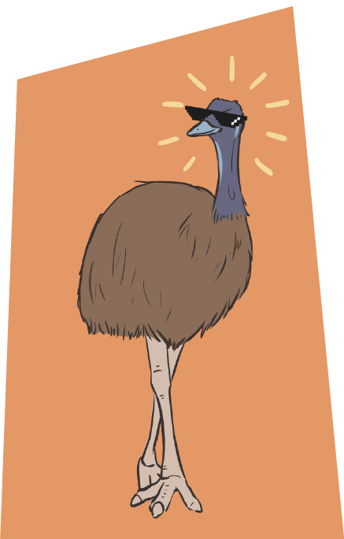
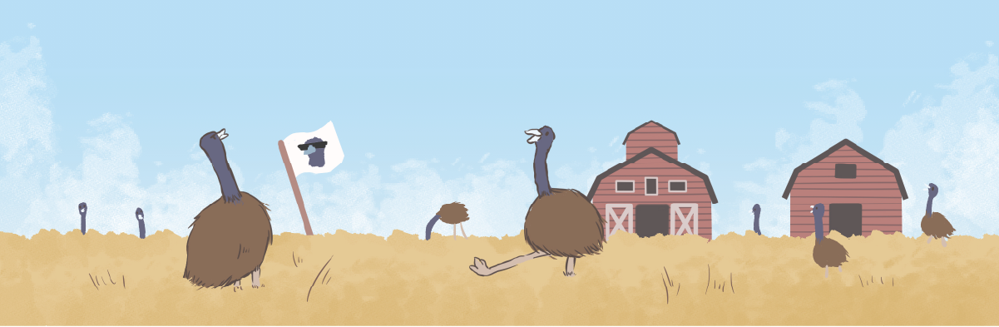

때는 1932년, 제 1차 세계대전에 참전했던 호주군들의 눈 앞에 또 다른 거대한 적이 나타났다.
호주 정부가 제공한 토지에서 농사를 짓던 퇴역 호주 군인들, 그러나 1920년대 후반부터 시작된 대공황으로 줄어든 소비, 계속해서 떨어지는 밀 값, 가뭄까지 들이닥친 최악의 상황에서 결정타를 날린 불청객이 찾아온다.
바로 이 전쟁의 원인, 가뭄으로 먹을 것을 구하러 농가까지 찾아온 2만 마리의 에뮤 군단이었다.


에뮤는 캥거루, 코알라와 같이 호주를 대표하는 동물로 키는 2m 정도, 몸무게는 50kg 가량의 타조와 같이 생긴 새이다. 그리고 가장 중요한 이 새의 주식은 바로 과일, 곤충 또는
곡식.

정부의 요청에 의해 밀을 대량으로 키우던 밀 농장을 본 에뮤는 인간들이 물도 가져다 놓고 땅도 잘 다진데다 식량도 천지에 널려있으니 밀 농장 안에 대놓고 보금자리를 만들고 눌러 앉아버린 것!
커다란 에뮤에게 울타리는 애초에 무용지물이었고 소방서나 경찰관들로 이 문제를 해결할 수 없자 농부들은 군에 도움을 요청했다.